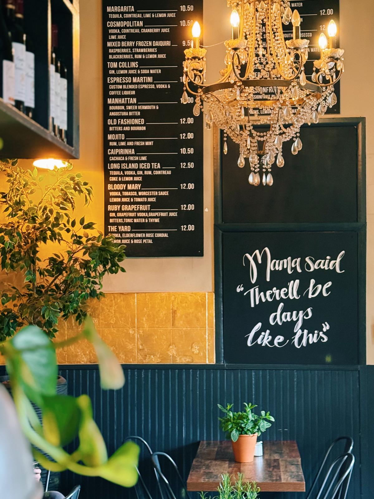
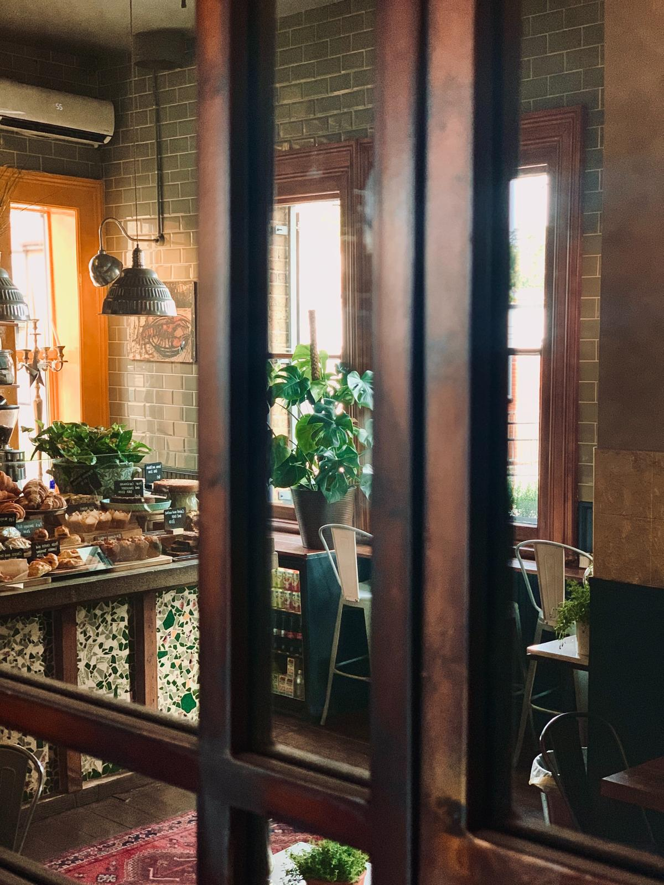
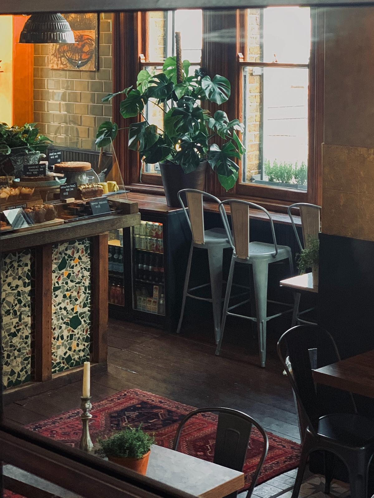
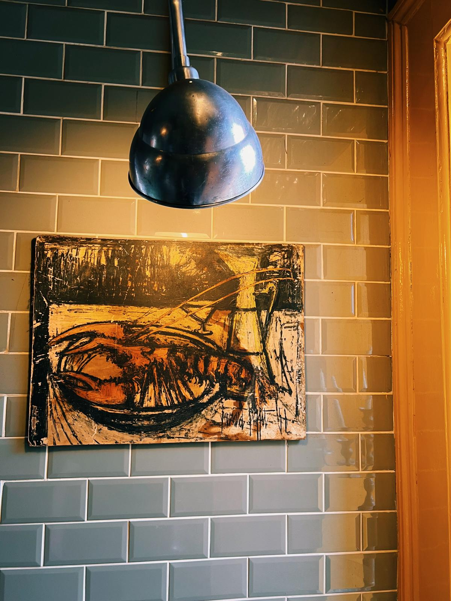

The Yard Café in Palmers Green opened in 2015 is a beloved local gem nestled within the historic Palmers Green Station building on Aldermans Hill. This cozy café/wine bar offers a warm and inviting atmosphere, making it a favorite spot for both commuters and locals.
Our cafe during the day and wine & cocktail bar at night offers a good selection of fine wines and nibbles with live music on certain days.
We also host regular wine tastings and Supper Club evenings.
Take A Look Inside Our Palmers Green Café And Discover The Warm, Welcoming Atmosphere We've Created.



